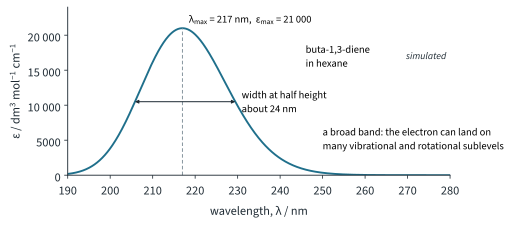
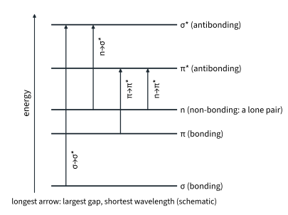
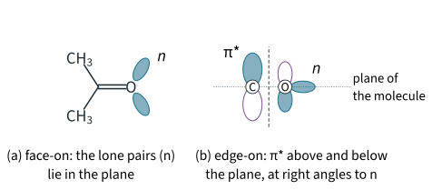
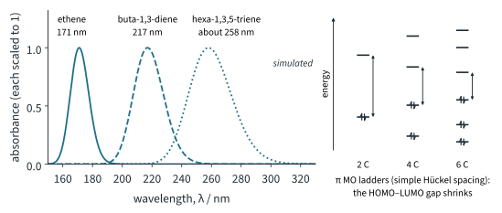
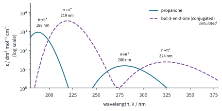
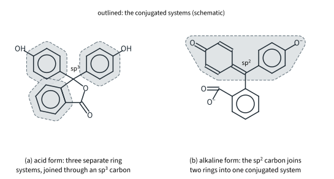
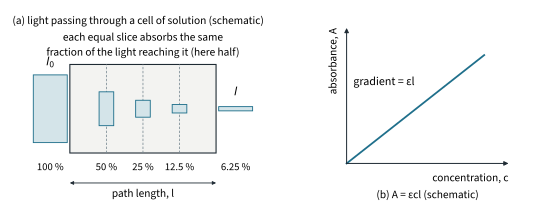
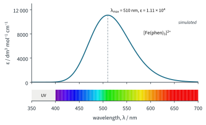
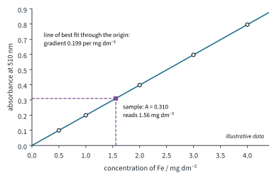

UV/vis and IR Spectroscopy 1
Chapter H3.2 · UV/vis and IR Spectroscopy Part 1
On this page
Introduction
Hold a bottle of sunscreen up to the light: it looks white, yet it is there to stop the sun's ultraviolet rays reaching your skin. A glass of orange juice, a solution of copper(II) sulfate and the dye in a highlighter pen all take some colours out of white light and let the rest through. All of these are absorbing light by moving electrons from one energy level to another. Measuring which wavelengths are absorbed, and how strongly, is ultraviolet/visible (UV/visible) spectroscopy.
In H3.1 you met the molecular orbitals that hold the electrons and saw that the lowest-energy electronic transition takes an electron from the HOMO to the LUMO. This Part asks three questions. Which molecules absorb, and why (the chromophore)? Where do they absorb (the transitions, and the effect of conjugation)? And how much do they absorb (the Beer–Lambert law)? The last question turns UV/visible spectroscopy into one of the most widely used ways of measuring concentration in any laboratory. Part 2 does the same for infrared (IR) spectroscopy.
Key terms
You will use these terms throughout this Part.
| Term | Meaning |
|---|---|
| Electronic transition | The movement of an electron from one molecular orbital to another of higher energy when the molecule absorbs a photon whose energy matches the gap. |
| σ→σ*, n→σ*, π→π*, n→π* | The four kinds of electronic transition in organic molecules: an electron moves from a σ bonding, π bonding or non-bonding (n, lone-pair) orbital into an antibonding σ* or π* orbital. |
| Chromophore | The group of atoms in a molecule responsible for its UV/visible absorption: a double or triple bond, a delocalised (conjugated) system, or an atom with a lone pair. |
| Allowed transition | A transition with a high probability: it gives a strong band (large ε). |
| Forbidden transition | A transition with a low (but not zero) probability: it gives a weak band (small ε). |
| Conjugation | Alternating single and multiple bonds (or a ring of p orbitals) whose p orbitals overlap to form one delocalised π system (H3.1 Part 2). |
| λmax | The wavelength at the top of an absorption band, where the absorbance is greatest. |
| Absorbance, A | A = lg(I0/I), where I0 is the intensity of light entering the sample and I the intensity leaving it. No units. |
| Transmittance, T | The fraction of the light that passes through: T = I/I0, often given as a percentage. |
| Molar absorptivity, ε | A constant characteristic of the substance (at a given wavelength): the absorbance of a 1 mol dm−3 solution in a 1 cm cell. Units dm3 mol−1 cm−1. |
| Beer–Lambert law | A = εcl: absorbance is proportional to concentration c and to path length l. |
| Calibration graph | A graph of absorbance against concentration for standard solutions, used to read off the concentration of an unknown. |
| Blank | A cuvette of solvent (or of all the reagents except the substance being measured) used to set the instrument to zero absorbance. |
What a UV/visible spectrum shows
A molecule can absorb a photon only if the photon's energy exactly matches the gap between two of its energy levels, ΔE = hf = hc/λ (H3.1 Part 2). The gaps between electronic levels correspond to photons of ultraviolet (UV, 10–400 nm) and visible (400–700 nm) light, so these are the photons that promote electrons. A UV/visible spectrometer passes light through a cell (a cuvette) of the solution, compares the intensity I that comes out with the intensity I0 that goes in, and scans the wavelength, usually over about 200–800 nm. The details of the instrument are not needed.
The result is a plot of absorbance (or of ε) against wavelength, like Fig 1. Two numbers describe each band: λmax, the wavelength of the top of the band, and εmax, how strongly it absorbs there.

Notice that the band is broad, about 24 nm wide at half height, not a sharp line. As H3.1 Part 2 promised, this is because each electronic level carries its own ladder of vibrational and rotational levels. The electron can start from the lowest level of the ground state and land on any of the many vibrational and rotational sublevels of the excited state, so photons over a range of slightly different energies are absorbed. In solution, collisions with solvent molecules blur these closely spaced transitions into one smooth band.
The four kinds of electronic transition
The electrons in an organic molecule sit in three kinds of occupied orbital (H3.1): σ bonding orbitals (every single bond, and one of the bonds in each double or triple bond), π bonding orbitals (the second and third bonds of a multiple bond, and delocalised systems) and non-bonding orbitals, n, which are the lone pairs on atoms such as O, N and the halogens. The empty orbitals that matter are the antibonding π* and σ*. Their order of energy, for one isolated group, is shown in Fig 2:
σ < π < n < π* < σ*

So four kinds of transition are possible. Typical order for small molecules: σ→σ* has the largest gap and n→π* the smallest; n→σ* and π→π* overlap (the table below shows n→σ* of methanol, trimethylamine and iodomethane at longer wavelength than ethene's π→π*).
- σ→σ*: needs the most energy. Every organic molecule has σ bonds, but this jump needs photons of wavelength below about 150 nm, deep in the vacuum UV (below about 200 nm, where air itself absorbs). Alkanes can do nothing else.
- n→σ*: a lone-pair electron moves into σ*. Found in saturated compounds with a lone pair (alcohols, ethers, amines, halogenoalkanes); mostly below about 200 nm (iodomethane and trimethylamine, below, are exceptions).
- π→π*: needs a double or triple bond or a delocalised system. Ethene absorbs at 171 nm, in the vacuum UV; conjugation moves the band to longer wavelength.
- n→π*: needs a lone pair on an atom that is itself part of a π bond, as in C=O. It has the smallest gap, so the longest wavelength: about 280 nm for propanone. For propanone the HOMO is the oxygen lone-pair (n) orbital, so n→π* is its HOMO→LUMO transition, as H3.1's rule says.
Some typical values (literature values, in hexane or the gas):
| Compound | Electrons available | Transition | λmax / nm | ε / dm3 mol−1 cm−1 | Photon energy / kJ mol−1 |
|---|---|---|---|---|---|
| ethane | σ only | σ→σ* | about 135 | – | 887 |
| water | σ, n | n→σ* | 167 | 1480 | 717 |
| methanol | σ, n | n→σ* | 184 | 150 | 651 |
| chloromethane | σ, n | n→σ* | 173 | 200 | 692 |
| iodomethane | σ, n | n→σ* | 258 | 365 | 464 |
| trimethylamine | σ, n | n→σ* | 227 | 900 | 527 |
| ethene | σ, π | π→π* | 171 | about 15 000 | 700 |
| propanone | σ, π, n | π→π* | about 188 | 900 | 637 |
| n→π* | about 280 | 15 | 428 |
The photon energies come from E = hcL/λ with the Data Booklet values h = 6.63 × 10−34 J s, c = 3.00 × 108 m s−1 and L = 6.02 × 1023 mol−1. For example, for propanone's n→π* band:
E = hcL / λ = (6.63 × 10−34 × 3.00 × 108 × 6.02 × 1023) / (280 × 10−9) = 4.2764 × 105 J mol−1 = 428 kJ mol−1
Notice the halogen trend: the lone pair of iodine is larger and less tightly held than that of chlorine, so it is higher in energy and its n→σ* gap is smaller. Iodomethane (258 nm) and trimethylamine (227 nm) are the saturated compounds in the table that reach above 200 nm; most others absorb only below it.
Allowed and forbidden transitions
Look again at propanone. Its π→π* band has ε = 900 dm3 mol−1 cm−1, but its n→π* band only 15. The height of a band depends on the probability that a photon of the right energy actually causes the jump. A transition with a high probability is called allowed; one with a low probability is called forbidden. "Forbidden" does not mean impossible: forbidden transitions still happen, just rarely, so they give weak bands.
Why is n→π* in C=O forbidden? An electron can jump easily between two orbitals only if they overlap, that is, occupy the same region of space. In the C=O group the lone-pair (n) orbitals on oxygen lie in the plane of the molecule. The π* orbital has its lobes above and below that plane, at right angles to it (Fig 3). The two orbitals hardly overlap, so the electron is unlikely to make the jump. In a π→π* transition both orbitals are made from the same p orbitals, in the same region above and below the plane, so the jump is easy: an allowed transition with a strong band.

Worked example 1: propanone and but-3-en-2-one
Propanone, CH3COCH3, absorbs at about 188 nm (ε 900) and about 280 nm (ε 15). But-3-en-2-one, CH2=CH–CO–CH3, absorbs at 219 nm (ε 3600) and 324 nm (ε 24) (literature values). (a) Assign each band of propanone to a transition and explain the difference in ε. (b) Explain why both bands of but-3-en-2-one lie at longer wavelength.
(To answer part (a), you have to match the larger gap to the shorter wavelength, and the weak band to the forbidden transition.)
- 188 nm, ε 900: the larger gap, π→π* of C=O. Allowed: the π and π* orbitals occupy the same region of space, so the band is strong.
- 280 nm, ε 15: the smallest gap, n→π*. Forbidden: the lone-pair orbital on O lies in the molecular plane and π* lies above and below it, so they hardly overlap and the band is weak (sixty times weaker here).
(To answer part (b), you have to spot the conjugation: in but-3-en-2-one the C=C and the C=O are joined by a single bond, so their p orbitals overlap and form one π system over four atoms.) The four-centre π system has a smaller π→π* gap, as H3.1 showed for buta-1,3-diene, so the π→π* band moves from 188 to 219 nm. The π* orbital of the conjugated system is also lower in energy than that of an isolated C=O, so the n→π* gap shrinks as well: 280 → 324 nm. Both bands keep their character: the π→π* band is still strong and the n→π* band still weak (Fig 5, in the conjugation section).
Benzene and transition-metal complexes
H3.1 Part 2 left a puzzle: the simple Hückel model gives benzene the same HOMO–LUMO gap as ethene, yet benzene absorbs at longer wavelength. In fact benzene shows three π→π* bands: a very strong one at 184 nm (ε about 60 000), a strong one at 204 nm (ε 7900) and a weak one at 255 nm (ε about 200) (literature values). The 255 nm band is a π→π* transition that is forbidden by symmetry, so it is weak even though it is π→π*.
The same idea explains why many transition-metal ions in Topic 13 Part 2 are only pale. d–d transitions in octahedral complexes are forbidden too, with ε usually below about 100 (literature value), so a fairly concentrated solution is needed to see the colour. When analysts want to measure a metal at low concentration, they first turn it into a complex that absorbs much more strongly, such as the iron complex [Fe(phen)3]2+ later in this Part, whose ε is over a hundred times larger.1
Chromophores
Common chromophores are C=C, C≡C, C=O, C≡N, N=N, the nitro group NO2, the benzene ring, any conjugated system, and atoms with lone pairs (O, N, S, halogens). A molecule with no chromophore, such as an alkane, can only undergo σ→σ* at very short wavelength.
A molecule with a chromophore absorbs in the UV/visible region, but whether its band appears in an ordinary spectrum, which starts at about 200 nm, depends on the chromophore. Saturated compounds whose only chromophore is a lone pair (water, alcohols, ethers) mostly absorb only below about 200 nm (ethanol's absorption tail runs to about 210 nm; iodomethane and trimethylamine are exceptions). That is useful: it makes them good solvents for UV/visible spectroscopy. Each solvent has a cut-off wavelength below which it absorbs too strongly to be used (literature values):
| Solvent | Chromophore and transitions | Usable down to about |
|---|---|---|
| water | lone pairs on O: σ→σ*, n→σ* | 190 nm |
| hexane | none: σ→σ* only | 195 nm |
| ethanol | lone pairs on O: σ→σ*, n→σ* | 210 nm |
Worked example 2: predicting absorption
State the chromophore, if any, in each compound, the transitions it allows, and whether it shows a band in a UV/visible spectrum above 200 nm: hexane, ethanol, chloromethane, iodomethane, propanone, benzene, buta-1,3-diene.
(To answer this, you have to look for π bonds, delocalised systems and lone pairs in each structure, then use the table of transitions above.)
| Compound | Chromophore | Transitions | Band above 200 nm? |
|---|---|---|---|
| hexane | none | σ→σ* only (below about 150 nm) | No: used as a solvent |
| ethanol | lone pairs on O | σ→σ*, n→σ* (below 200 nm) | No band above about 210 nm (its cut-off): used as a solvent |
| chloromethane | lone pairs on Cl | σ→σ*, n→σ* (173 nm) | No |
| iodomethane | lone pairs on I | σ→σ*, n→σ* (258 nm) | Yes: the large, loosely held lone pair on I brings n→σ* into range |
| propanone | C=O (π bond and lone pairs on O) | σ→σ*, n→σ*, π→π* (188 nm), n→π* (280 nm) | Yes: a weak band near 280 nm |
| benzene | the delocalised ring | π→π* (184, 204, 255 nm) | Yes: 204 nm, and a weak band at 255 nm |
| buta-1,3-diene | conjugated C=C–C=C | π→π* (217 nm) | Yes: a strong band at 217 nm |
Conjugation and longer wavelengths
In H3.1 Part 2 you saw that the longer the conjugated chain, the more π MOs there are, the closer together they crowd, and the smaller the HOMO–LUMO gap. A smaller gap means a lower-energy photon, so a longer wavelength (Fig 4):

The same holds when the conjugated system includes a C=O group, as in worked example 1 (Fig 5). Because ε ranges from 15 to 3600 here, Fig 5 uses a logarithmic scale for ε, so the weak n→π* bands can be seen beside the strong π→π* bands.

Make the conjugated system long enough and the band moves out of the UV and into the visible. The compound then absorbs some colours of white light and we see the complementary colour, the one opposite the absorbed colour on the colour wheel of Topic 13 Part 2. β-carotene, with eleven conjugated C=C bonds, absorbs blue light and looks orange (H3.1 Tutorial 2). Most dyes and pigments are long conjugated systems for this reason.
Further example: phenolphthalein
Phenolphthalein (Topic 10) is colourless in acid and pink in alkali. Fig 6 shows why. In the acid form, the central carbon is sp3: it has no p orbital, so it breaks the conjugation, and the three benzene rings are three separate π systems. Each absorbs only in the UV, like benzene, so the solution is colourless. In alkali the lactone ring opens and the central carbon becomes sp2. Its p orbital now joins two of the rings into one long conjugated system running from one oxygen to the other. The HOMO–LUMO gap falls so far that the absorption moves into the visible: λmax about 552 nm (literature value), which is green light, so the solution looks pink.

Absorbance and concentration
The Beer–Lambert law
Shine light of one wavelength through a solution. Divide the path into thin, equal slices. Each slice contains the same number of absorbing molecules, so each slice absorbs the same fraction of the light that reaches it (Fig 7(a)). If each slice lets through half, two slices let through a quarter, three an eighth, and so on: the intensity falls by the same factor for every extra slice. Taking the logarithm turns this repeated factor into something that simply adds up slice by slice. That is why absorbance is defined with a logarithm:
absorbance, A = lg(I0 / I)
where I0 is the intensity of the light entering the sample and I the intensity leaving it, and "lg" means log10. Doubling the path length doubles the number of slices, so it doubles A; doubling the concentration puts twice as many molecules in each slice, so it doubles A too. The result is the Beer–Lambert law:

The fraction of light let through is the transmittance, T = I/I0, often quoted as a percentage. Since A = lg(I0/I):
A = −lg T %T = 100 × 10−A
So an absorbance of 1 lets through only 10 % of the light, and an absorbance of 2 only 1 %.
Worked example 3: finding ε
A solution of buta-1,3-diene in hexane, 2.00 × 10−5 mol dm−3, has an absorbance of 0.420 at 217 nm in a 1.00 cm cell. Calculate ε at 217 nm.
(To answer this, you have to rearrange A = εcl for ε and keep the units.)
ε = A / (cl) = 0.420 / (2.00 × 10−5 × 1.00) = 2.10 × 104 dm3 mol−1 cm−1
The units come out as 1 / (mol dm−3 × cm) = dm3 mol−1 cm−1. A value this large shows an allowed π→π* transition.
Worked example 4: absorbance and transmittance
(a) What percentage of the light is transmitted by samples with absorbance 0.30, 1.00 and 2.00? (b) A sample transmits 25 % of the light. What is its absorbance?
(To answer part (a), you have to use %T = 100 × 10−A; for part (b), A = −lg T with T as a fraction, not a percentage.)
(a) A = 0.30: %T = 100 × 10−0.30 = 50.1 % A = 1.00: 10.0 % A = 2.00: 1.00 %
(b) A = −lg 0.25 = 0.602
Notice how little light is left at high absorbance: at A = 2 only one photon in a hundred reaches the detector. This is one reason why measurements are kept below an absorbance of about 1 (see the box Finding a concentration by UV/visible spectroscopy, later in this Part).
Worked example 5: strong and weak bands
What concentration gives an absorbance of 0.50 in a 1.00 cm cell (a) for propanone at 280 nm (ε 15; assume the Beer–Lambert law holds) and (b) for buta-1,3-diene at 217 nm (ε 21 000)?
(To answer this, you have to rearrange A = εcl for c.)
(a) c = A / (εl) = 0.50 / (15 × 1.00) = 0.0333 mol dm−3 = 0.033 mol dm−3
(b) c = 0.50 / (21 000 × 1.00) = 2.38 × 10−5 mol dm−3 = 2.4 × 10−5 mol dm−3
The diene can be measured at about 1400 times lower concentration (21 000 / 15 = 1400). Allowed transitions make UV/visible spectroscopy very sensitive; forbidden ones need much more concentrated solutions.
Quantitative analysis
Because A is proportional to c, a UV/visible spectrometer is a concentration meter. It works for any species, organic or inorganic, that absorbs, or that can be turned into something that absorbs. The method is always the same:
Worked example 6: iron in borehole water
Iron(II) ions are almost colourless in water: their d–d transitions are forbidden and weak. To measure iron at a few mg dm−3, it is turned into the intensely coloured orange-red complex tris(1,10-phenanthroline)iron(II), [Fe(phen)3]2+. Each 1,10-phenanthroline ("phen") molecule binds through two nitrogen lone pairs (bidentate, like en in Topic 13), so three phen ligands surround each Fe2+ octahedrally. The complex absorbs at λmax = 510 nm with ε = 1.11 × 104 dm3 mol−1 cm−1 (literature values) (Fig 8).

Method. A measured volume of the sample goes into a 100.0 cm3 volumetric flask with:
- hydroxylamine hydrochloride, NH2OH·HCl, a reducing agent: it reduces any Fe3+ to Fe2+, so that all the iron is measured (only Fe2+ forms the coloured complex);
- 1,10-phenanthroline, in excess: so that every Fe2+ ion is converted to [Fe(phen)3]2+;
- sodium ethanoate: it buffers the solution into the pH range (about 3 to 9, literature value) where the complex forms fully. In more acidic solution H+ competes for the nitrogen lone pairs of phen.
The flask is left for about 10 minutes for the colour to develop, made up to the mark with deionised water, and the absorbance is measured at 510 nm in a 1.00 cm cell against a reagent blank (the same reagents with deionised water in place of the sample). Standards are made the same way from a standard solution of ammonium iron(II) sulfate.
Illustrative data, from ε (the concentration is that of Fe in the 100.0 cm3 flask):
| [Fe] / mg dm−3 | 0.50 | 1.00 | 2.00 | 3.00 | 4.00 |
|---|---|---|---|---|---|
| Absorbance at 510 nm | 0.0995 | 0.199 | 0.398 | 0.597 | 0.796 |
50.0 cm3 of borehole water, treated in the same way in a 100.0 cm3 flask, gives an absorbance of 0.310. Find the concentration of iron in the water.
(To answer this, you have to read the flask concentration off the calibration line, then undo the dilution: 50.0 cm3 made up to 100.0 cm3 is a dilution by a factor of 2.)

The points lie on a straight line through the origin with gradient 0.199 per mg dm−3 (Fig 9).
[Fe] in the flask = 0.310 / 0.199 = 1.558 mg dm−3 = 1.56 mg dm−3
[Fe] in the water = 1.558 × (100.0 / 50.0) = 3.12 mg dm−3
You can also work in moles, straight from A = εcl:
c = A / (εl) = 0.310 / (1.11 × 104 × 1.00) = 2.793 × 10−5 mol dm−3 in the flask
in the water: 2 × 2.793 × 10−5 = 5.59 × 10−5 mol dm−3; × 55.8 g mol−1 = 3.12 × 10−3 g dm−3 = 3.12 mg dm−3
And the gradient checks the literature ε: 1.00 mg dm−3 of Fe is 1.00 × 10−3 / 55.8 = 1.792 × 10−5 mol dm−3, so ε = 0.199 / (1.792 × 10−5 × 1.00) = 1.11 × 104 dm3 mol−1 cm−1. Converting Fe2+ into the complex raises ε from below about 100 to over 10 000: that is what makes a few mg dm−3 measurable.
How far does light get into a solution?
Worked example 7 (Further example): light in a photoreactor
H3.1 Part 2 said that in a large photochemical reactor only a thin layer next to the lamp is lit. The Beer–Lambert law shows why. A photoreactant has ε = 5.0 × 103 dm3 mol−1 cm−1 at 365 nm and is used at 0.0200 mol dm−3 (illustrative data; assume the Beer–Lambert law holds). (a) Find the absorbance per cm of solution. (b) Find the depths at which 90 % and 99 % of the light has been absorbed. (c) Comment on a stirred tank 10 cm across and on tubing about 1 mm across.
(To answer part (b), you have to translate the percentages into absorbances: 90 % absorbed means 10 % transmitted, A = 1; 99 % absorbed means A = 2.)
(a) A per cm = εc = 5.0 × 103 × 0.0200 = 100 (per cm of path)
(b) A = 1: l = 1 / 100 = 0.010 cm = 0.10 mm A = 2: l = 2 / 100 = 0.020 cm = 0.20 mm
(c) In a stirred tank 10 cm across, almost all the light is absorbed in the first fifth of a millimetre: everything beyond is dark, and the reaction happens only in a thin skin by the lamp (stirring helps by bringing fresh solution to it). In tubing about 1 mm across, A = 100 × 0.1 = 10, so the far side of the tube still gets very little light, but every part of the solution is within a millimetre of the light and the flow keeps moving it past. That is why flow photoreactors use narrow channels and keep the solution moving.
Summary
The ideas of this Part in one table.
| Idea | Key points |
|---|---|
| Transitions | Typical order for small molecules: σ→σ* (below about 150 nm, deep in the vacuum UV) has the largest gap and n→π* (longest λ) the smallest; n→σ* (mostly below 200 nm) and π→π* overlap. Order of orbitals σ < π < n < π* < σ* (schematic, for one isolated group). |
| Allowed and forbidden | Allowed: high probability, strong bands: π→π* (ε about 103 to 105); n→σ* moderate (ε about 100 to 1000). Forbidden: low probability, weak bands (ε below about 100): n→π* (n in the plane, π* above and below it), d–d; benzene's 255 nm band (ε about 200). |
| Chromophore | A double or triple bond, a delocalised system, or an atom with a lone pair. No chromophore: no absorption above about 150 nm. Water, hexane and ethanol are UV solvents. |
| Conjugation | Longer conjugated system: smaller HOMO–LUMO gap, longer λmax; long enough: visible absorption and colour (the complementary colour is seen). An sp3 carbon breaks conjugation. |
| Beer–Lambert | A = lg(I0/I) = εcl; ε in dm3 mol−1 cm−1; %T = 100 × 10−A; A against c is a straight line through the origin, gradient εl. |
| Analysis | Measure at λmax; zero with a blank; standards and a calibration graph; dilute into A about 0.1 to 1; undo dilutions. A weak absorber can be converted into a strong one (Fe2+ → [Fe(phen)3]2+). |
Additional information
- Beyond the syllabus: the intense colours of [Fe(phen)3]2+ and of the manganate(VII) ion, MnO4−, are not d–d bands. They are charge-transfer bands, in which an electron moves from an orbital mainly on the metal to one mainly on the ligands, or the other way round. These are allowed transitions, so ε is large. ↩
- Beyond the syllabus: IUPAC now calls ε the molar absorption coefficient (older books: molar extinction coefficient). 9813 uses molar absorptivity. ↩